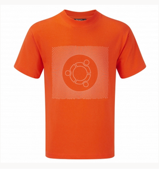

Copyright © 2017 WikiLibre Inc. All rights reserved.

Les grandes entreprises faisant des contenus non libres ont des revenus, avec les actions en bourse, mais surtout en vendant leurs produit ainsi qu'en vendant les imformations personnelles des utilisateurs à des sociétés tierces. Ainsi ces sociétés les utilisent afin de créer des pubs qui sont adaptés à nos recherches passées.
Or ce n'est pas le cas des sociétés proposant un contenu libre. Celle-ci proposant des produits gratuit et ne collectants pas les imformations de l'utilisateur, ou du moins pas pour les vendre, ce système n'est pas économiquement viable et ne depand que des actionnaires. C'est pourquoi la plupart de ces sociétés, mozilla ou wikipedia par exemples mais il y en a bien d'autres, on mis un système de dons. Pour remprendre l'exmple de wikipédia héberger autants de contenus avec autant de langue sur des serveurs coûte extremement cher en consommation, refroidisement, sécuritée et bien d'autres
Le système de dons est donc trés important car il permet aux entreprises du libre de continuer à proposer un contenus agreable et libre. Ce qui nous assure d'avoir une alternatives a la suprematie des grandes entreprises et continuer dans un monde ou nous serions moins manipuler.
Les dons à faire ne sont pas faramineux. Vous pouvez, et il est bien de faire un don entre 10/50 euros mais il suffit de ne pas acheter de baguette de pain un seul soir dans un mois et ainsi donner un euros par mois et un euros multipliés par le nombres d'utilisateurs ça commence à peser et permettre à l'entreprises de faire de nombreuses choses. Après si vous ne voulez pas faire de dons car vous trouvez ça inutile car vous ne recevez rien, il faut savoir que l'on peut acheter des goodies. Cela profite à vous mais également à l'entreprises. Pour le cas de Canonical (l'entreprise en charge d'ubuntu) qui poséde un store pour pouvoir acheter de nombreuses choses tel que des tee-shirt des mug etc...
Ce n'est donc pas en temps que rédacteur mais avec mon coeur que je vous dit cela: Fites des dons au sociétés du libre !
Copyright © 2017 WikiLibre Inc. All rights reserved.